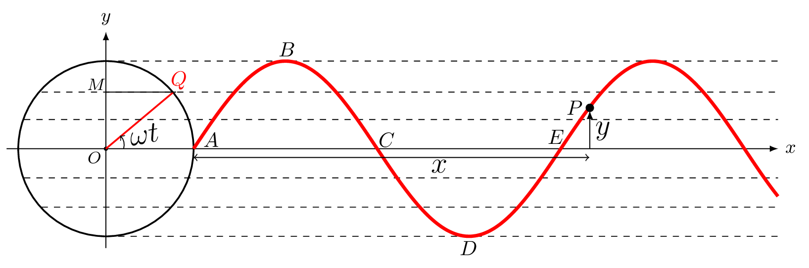
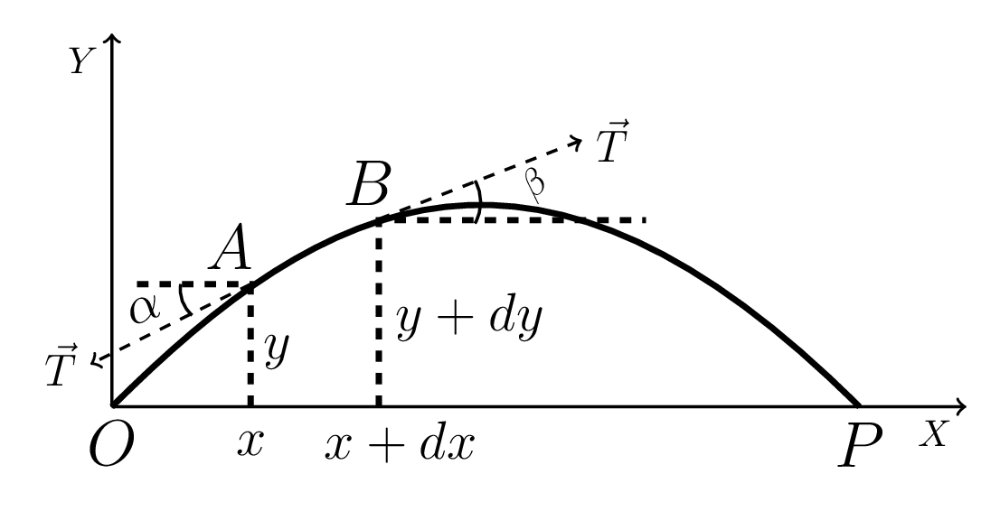

Section 4.2 Waves
When a stone is thrown in a quiet pond a number of nice circular rings, called ripples [Figure 4.2.1.(a)] emerge on the surface of the water which grow gently and move across the pond in a concentric pattern. These growing ripples are called a wave which carries energy from the point of stone thrown to the edge of a pond. Hence a wave can be defined as a disturbance in space that can carry energy from one location to another. A wave creates in a medium when a medium is trying to regain its equilibrium state. When a stone is thrown it transfers its energy to the surface of water due to which water layer stretches downwards till stone dips down that layer of water. When stone leaves the water layer, water layer wants to recover its original position to maintain equilibrium due to surface tension but as it reaches to the original position it keeps raising upward because of inertia and stretches the water surface again till reaches the maximum height. Now due to surface tension this layer of water gets pulled down again and starts sinking down below the equilibrium position due to inertia such procedure is the cause of waves on water.
Energy propagates two ways in water one way is due to vertical up and down motion of water surface and another way is a back and forth motion of water molecules inside the water. Similar to concentric circles on water surface energy transmitted in space in the form of concentric spheres. Figure 4.2.1.(b) shows the same disturbances traveling away from the center as a series of successive wavefronts labeled crests and troughs. A wavefront is a locus of points along which all phases and displacements are identical. The solid circles depict the outward-moving wave crests; the dashed circles represent wave troughs. Adjacent crests are always a wavelength apart, as are the adjacent troughs.
On the basis of particle motion relative to the direction of energy propagation there are two forms of waves
-
Longitudinal wave, and
-
Transverse wave.
Transverse & Longitudinal Waves Open/Fixed End Transverse Waves In longitudinal wave the medium particles vibrate parallel to the direction of the energy propagation. Longitudinal waves are also called pressure waves. As a layer of one part of a medium creates pressure on the other part of the medium. Sound waves in any medium, waves propagating along spring are some examples of such wave. In transverse wave the medium particles vibrate perpendicular to the direction of the energy propagation. Movement of a wave through a solid object like a stretched rope or a trampoline is some examples of such wave.
2
sklkarn.github.io/Lab_anim/waves.html3
sklkarn.github.io/Lab_anim/transverse_wave.htmlOn the basis of requirement of medium to propagate energy there are two types of waves.
-
Mechanical wave, and
-
Electromagnetic wave.
Mechanical waves require material medium to propagate such as sound waves, water waves, string waves, seismic waves, etc. Electromagnetic waves, on the other hand do not require any medium but can propagate both in vacuum and in a medium, such as light waves, heat waves, radio waves, etc. Electromagnetic (em) waves are transverse in nature where electric field and magnetic field are perpendicular to each other and are also perpendicular to the direction of energy propagatation.
Longitudinal waves occur when a spring is fixed at one end and pulled back and forth by the other end as shown in Figure 4.2.2.(a). Transverse waves occur when a spring or string is fixed at one end and wiggled up and down by the other end as shown in Figure 4.2.2.(b). Both the waves can be easily described by a transverse nature as they are periodic in nature as shown in Figure 4.2.2.(c). The crest is the highest point on a wave. The trough is the valley between two waves. It is the lowest point. The wavelength, \(\lambda\) is the distance, either between the crests or troughs of two consecutive waves. It is the length of one complete wave. The amplitude, A is the peak value (either positive or negative) of a wave. The distance from the undisturbed level (equilibrium position) to the trough or crest. The compression is the part of the longitudinal wave where the particles crowded together. The rarefaction is the part of the longitudinal wave where the particles spread out. The wavelength is the distance from compression to compression or rarefaction to rarefaction in a pressure (longitudinal) wave. The frequency, \(\nu\) is a number of complete waves per second. If T is a time period to generate one complete wave then
\begin{equation*}
\nu=\frac{1}{T}.
\end{equation*}
Its unit is Hertz (\(H_{z}\)), i.e. cycles per second.
4
There is a third kind of new wave which has just been discovered, known as a gravitaional wave. It is a disturbance in spacetime and can pass through anything undisturbed. It travels with the velocity of light. It stretches and squashes the spacetime during propagation. Strain: The ratio of y displacement (stretch) to the x-displacement (squash) of medium is called a strain. \(strain=\frac{\,dy}{\,dx}\)
Pulse and Periodic Waves: A single vibratory disturbance that moves from point to point is called a pulse. A single wiggle flowing in a straight line is a pulse wave as shown in Figure 4.2.3.(a). When the pulse reaches a boundary with another medium, a part of it is reflected and a part is transmitted through the boundary. When a pulse reaches a fixed boundary (dead end), then the pulse is completely reflected and inverted by \(180^{o}\) out of phase. The series of evenly timed disturbances in a medium is called a periodic wave. It repeats the same pattern over and over again after a fixed interval of time as shown in Figure 4.2.3.(b). The source of a pulse wave is non periodic disturbance.
Sinusoidal Waves: The waves which take the form of sine or cosine function is known as sinusoidal waves. It is a single frequency periodic wave and is a consequence of simple harmonic motion of a medium particles. In fact, any periodic wave can be represented as a combination of sinusoidal waves. Instead of sinusoidal wave there are other forms of waves which are very important in electronics, they are square wave, sawtooth wave, etc.
Wave Number, \(\kappa\text{:}\) The number of complete waves per unit length is called a wave number. It is also sometimes called a propagation constant. If \(\lambda\) is a wavelength of a wave then
\begin{equation*}
\kappa = \frac{2\pi}{\lambda}.
\end{equation*}
Its unit is \(m^{-1}\) or \(rad/m^{-1}.\)
Wave Velocity (Phase Velocity): The velocity at which phase of a wave can travel is called a phase velocity. It is the velocity with which a crest or trough of a wave can progress in space.
\begin{equation*}
v =\frac{\,dx}{\,dt}
\end{equation*}
\begin{equation*}
= \frac{\lambda}{T}= f\lambda = \frac{2\pi}{2\pi}f\lambda = \frac{\omega}{k}
\end{equation*}
Particle Velocity: It is the velocity of a medium particle which oscillates about its mean position when a wave passes through the medium.
\begin{equation*}
v_{y} = \frac{\,dy}{\,dt}.
\end{equation*}

Group Velocity: The velocity at which energy is transported is called a group velocity. In reality, any signal consists of packets of waves of different frequencies, which travel together. The speed of the wave packets is called the group velocity. The group velocity [Figure 4.2.4] is a bit slower than the phase velocity of the individual waves. The packet moves slower than the single-frequency wave. If the medium is dispersionless then the group and phase velocity are the same.
Subsection 4.2.1 Simple harmonic wave function
The equation
\begin{equation*}
y=A\sin\omega t
\end{equation*}
represents the displacement of a single particle constituting SHM. Now if a wave of velocity v is propagating in a medium then the medium particles oscillates about its mean position. Consider a particle, P at a distance, x from position, A then wave reaches to P at time
\begin{equation*}
t_{1}=\frac{x}{v}
\end{equation*}
and the displacement of particle, P at time \(t_{1}\) would be the same as the displacement of particle, O at \(t-t_{1}\) [Figure 4.2.5]. Thus the displacement of particle, P in a medium at any instant \(t_{1}\) is given by Phasor Diagram
5
sklkarn.github.io/Lab_anim/phasor_diagram.html
\begin{equation*}
y_{1}=A \sin\omega (t-t_{1})
\end{equation*}
\begin{equation*}
= A \sin\omega \left(t-\frac{x}{v}\right) = A \sin \left(\omega t-2\pi f\frac{x}{v}\right)
\end{equation*}
\begin{equation*}
= A \sin \left(\omega t-2\pi \frac{x}{\lambda}\right)
\end{equation*}
Or, in general the wave function can be written as
\begin{equation*}
y= A \sin (\omega t-kx)
\end{equation*}
where
\begin{equation*}
\omega = 2\pi f = \frac{2\pi}{T},
\end{equation*}
and
\begin{equation*}
k = \frac{2\pi}{\lambda}.
\end{equation*}
This is the same as writing
\begin{equation}
y(x,t)=A \sin (kx-\omega t).\tag{4.2.1}
\end{equation}
We can also express the wave function as
\begin{equation}
y(x,t)=A \sin (kx\pm\omega t)\tag{4.2.2}
\end{equation}
where +ve sign for wave progressing in -ve direction and -ve for wave progressing in +ve direction.
The sinusoidal wave function can also be represented as
\begin{equation*}
y(x,t) = A \cos(\omega t-kx)
\end{equation*}
\begin{equation*}
\text{or,} \quad y(x,t) = A \cos(kx-\omega t)
\end{equation*}
or in more general case the combination of both or in a complex form like these
\begin{equation}
y(x,t) = A \sin(kx-\omega t)+B \cos(kx-\omega t) = Ae^{i(kx-\omega t)}\tag{4.2.3}
\end{equation}
Any of above wave functions describe the same wave. If time is counted from the maximum displacement of the medium particle’s initial position then cosine term appears, if time is counted from the minimum displacement of the medium particle as an initial position or its maximum velocity then sine term appears in the derivation of wave function.
Subsubsection 4.2.1.1 Wave equation
Let the displacement \(y(x,t)\) of a medium particle is given by
\begin{equation}
y(x,t) = A \sin(\omega t-kx)\tag{4.2.4}
\end{equation}
then the velocity of a medium particle can be
\begin{equation}
v_{y}(x,t) = \frac{\partial y(x,t)}{\partial t} = A\omega\cos(\omega t - kx)\tag{4.2.5}
\end{equation}
and the acceleration of a medium particle is
\begin{equation}
a_{y}(x,t) = \frac{\partial^{2} y(x,t)}{\partial t^{2}} = -A\omega^{2}\sin(\omega t - kx)= -\omega^{2}y(x,t)\tag{4.2.6}
\end{equation}
Also the slope of the wave at point, x and time, t is given by
\begin{equation}
\frac{\partial y(x,t)}{\partial x} = -Ak\cos(\omega t - kx)\tag{4.2.7}
\end{equation}
Also the curvature of the wave at point, x and time, t is given by
\begin{equation}
\frac{\partial^{2} y(x,t)}{\partial x^{2}} = - Ak^{2}\sin(\omega t - kx)= -k^{2}y(x,t)\tag{4.2.8}
\end{equation}
Hence the wave equation can be written as
\begin{equation*}
\frac{\partial^{2} y(x,t)/\partial t^{2}}{\partial^{2} y(x,t)/\partial x^{2}} =\frac{\omega^{2}}{k^{2}} = v^{2}
\end{equation*}
\begin{equation}
\therefore \quad \frac{\,d^{2}y(x,t)}{\,dx^{2}} = \frac{1}{v^{2}}\frac{\,d^{2}y(x,t)}{\,dt^{2}}\tag{4.2.9}
\end{equation}
where v is a wave velocity
Subsubsection 4.2.1.2 Wave Equation in Stretched String
Let us consider an elastic string tightly stretched between points, O and P by constant tension, T. The string is caused to vibrate by plucking it with a very small displacement, y at time, t so that the tension, T remains constant throughout the deflections of the string.

Let \(\mu\) be the mass per unit length of an element, AB of the vibrating string, as shown in Figure 4.2.6. The net force acting on the element, AB along x and y direction is given by
\begin{equation}
F_{x}=T\cos \beta -T \cos \alpha \tag{4.2.10}
\end{equation}
\begin{equation}
\text{and}\quad F_{y}=T\sin \beta -T \sin \alpha \tag{4.2.11}
\end{equation}
where \(\alpha\) and \(\beta\) are the inclination of tension, T with the horizontal x - axis. For small displacement
\begin{equation*}
\cos\beta = \cos \alpha \quad \Rightarrow F_{x} =0,
\end{equation*}
i.e., the motion of the particle of string along x - axis is zero.
\begin{equation*}
\text{Also,}\quad \sin\beta = \tan\beta = \left(\frac{\partial y}{\partial x}\right)_{B} = \left(\frac{\partial y}{\partial x}\right)_{x+\,dx}
\end{equation*}
\begin{equation*}
text{and} \quad \sin\alpha = \tan\alpha = \left(\frac{\partial y}{\partial x}\right)_{A} = \left(\frac{\partial y}{\partial x}\right)_{x}
\end{equation*}
where \(\frac{\partial y}{\partial x}\) defines the slope of tangents at a particular point at any time ’t’.
From eqn. (4.2.11), we have -
\begin{equation*}
F_{y}=T\left(\frac{\partial y}{\partial x}\right)_{x+\,dx}-T\left(\frac{\partial y}{\partial x}\right)_{x}
\end{equation*}
\begin{equation*}
=T\left[\left(\frac{\partial y}{\partial x}\right)_{x+\,dx}-\left(\frac{\partial y}{\partial x}\right)_{x}\right]
\end{equation*}
\begin{equation*}
=T\left[\left(\frac{\partial y}{\partial x}\right)_{x}+\frac{\partial}{\partial x}\left(\frac{\partial y}{\partial x}\right)_{x}\,dx+\cdots-\left(\frac{\partial y}{\partial x}\right)_{x}\right]
\end{equation*}
using Taylor’s expansions.
\begin{equation}
\therefore F_{y}=T\frac{\partial^{2} y}{\partial x^{2}}\,dx \tag{4.2.12}
\end{equation}
by neglicting higher order terms. i.e., \(F_{y} \neq 0\) hence the motion of the particle of string is only along y - axis.
If the acceleration of the element along vertical be \(\frac{\partial^{2} y}{\partial t^{2}}\) and mass of an element, AB is \(\mu\,ds\) then according to Newton’s second law of motion, this force is given by
\begin{equation}
F_{y} = \mu\,ds\frac{\partial^{2} y}{\partial t^{2}} \tag{4.2.13}
\end{equation}
\begin{equation*}
T\frac{\partial^{2} y}{\partial x^{2}}\,dx = \mu\,dx\frac{\partial^{2} y}{\partial t^{2}}
\end{equation*}
[Since, slope of the curve is small, \(\,ds\) can be replaced by \(\,dx\)]
\begin{equation*}
T\frac{\partial^{2} y}{\partial x^{2}} = \mu\frac{\partial^{2} y}{\partial t^{2}}
\end{equation*}
\begin{equation}
\text{or,}\quad \frac{\partial^{2} y}{\partial x^{2}} = \frac{1}{v^{2}}\frac{\partial^{2} y}{\partial t^{2}} \tag{4.2.14}
\end{equation}
It is the wave equation for a vibrating string, where
\begin{equation*}
v^{2}=\frac{T}{\mu}
\end{equation*}
is the velocity of the wave propagating along the string.